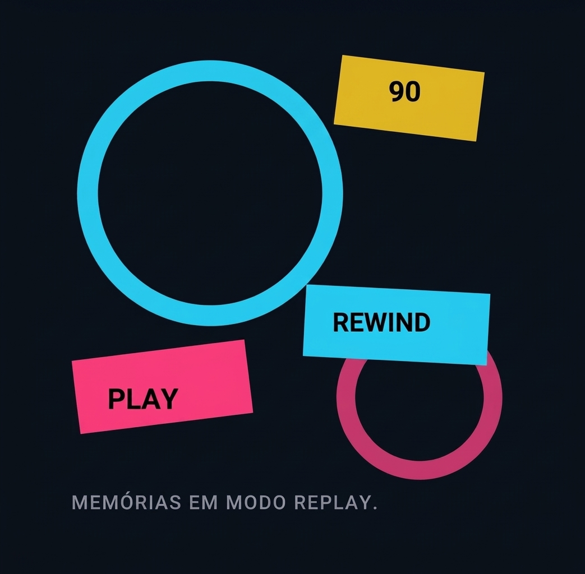
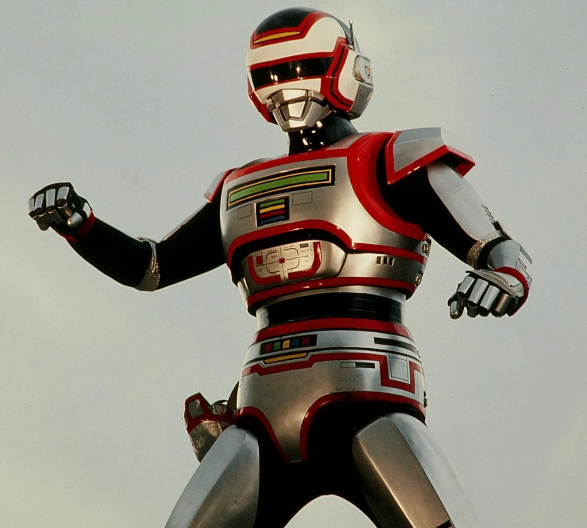
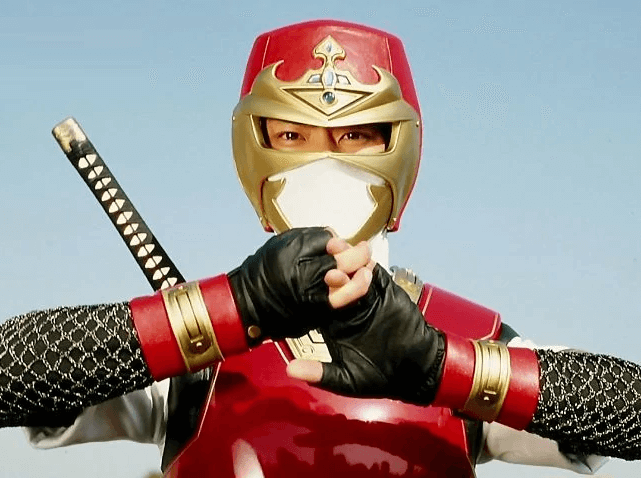
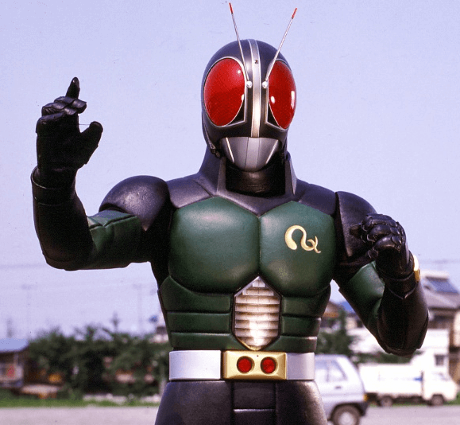
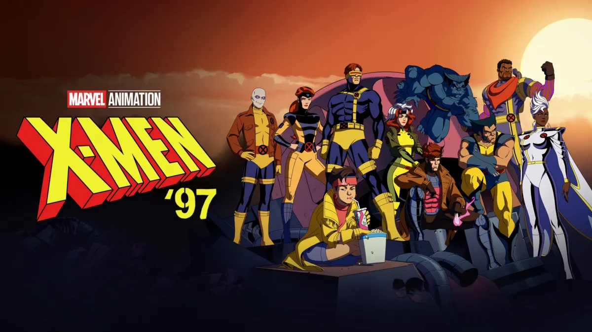

1986
80 • 90 • 2000
Uma viagem pela TV, pelos heróis e pelas animações que transformaram tardes comuns em grandes aventuras.
Apertar o Play
Antes dos Anos 90
Duas produções anteriores aos anos 90 que permaneceram vivas na memória de quem cresceu cercado por fantasias e aventura.
1986

1983
Faixa Especial
Tokusatsu, ação e personagens que viraram memórias afetiva.

Metal Hero

Ninja Hero

Tokusatsu
O Passado Continua Presente
Tokusatsu, ação e personagens que viraram memórias afetiva.

Continuação

Cultura POP

Mistério
Algumas histórias envelhecem. Outras viram memória.
Recomeçar